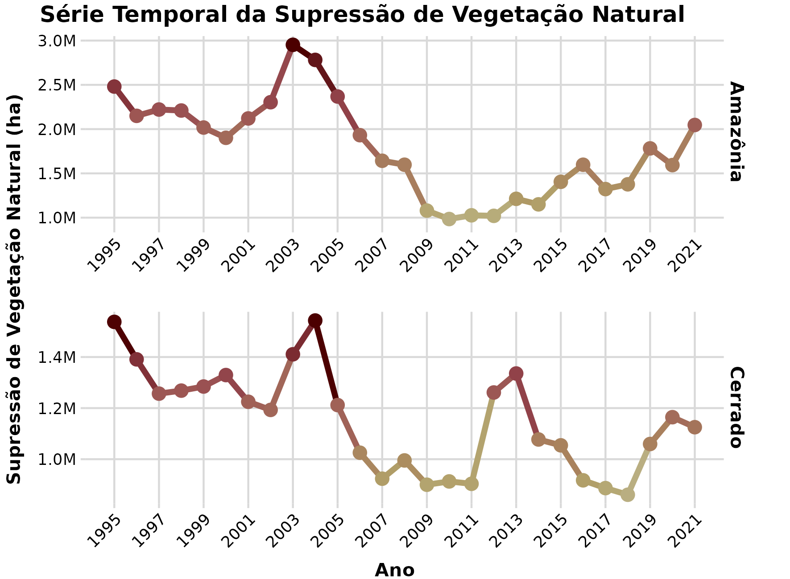
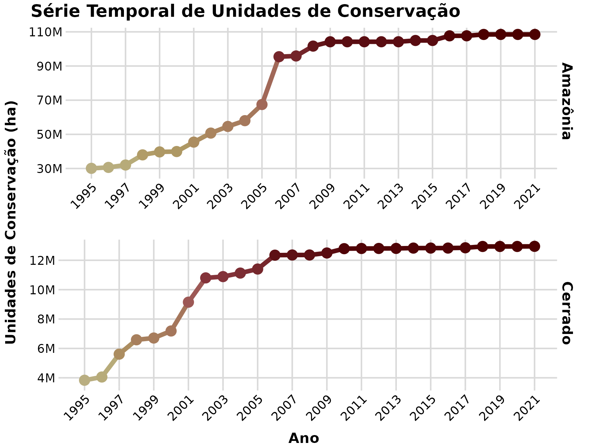
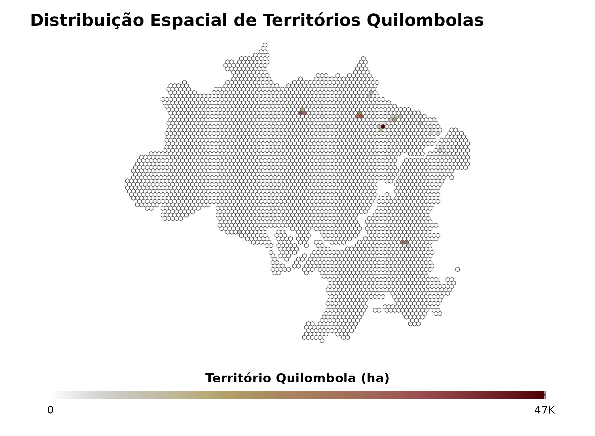
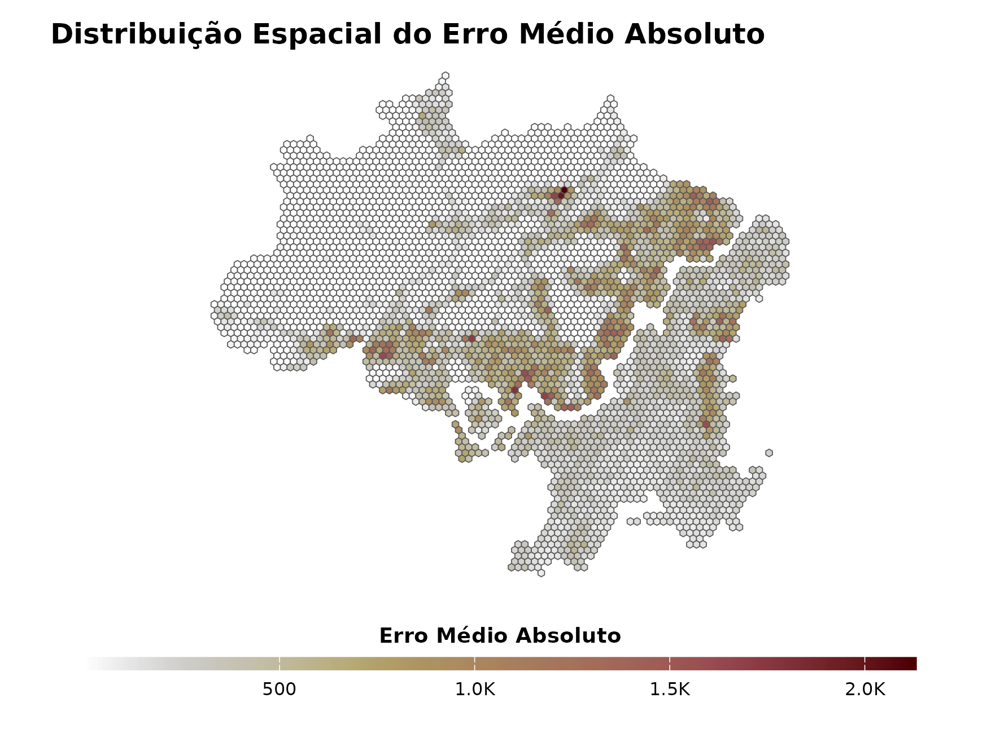
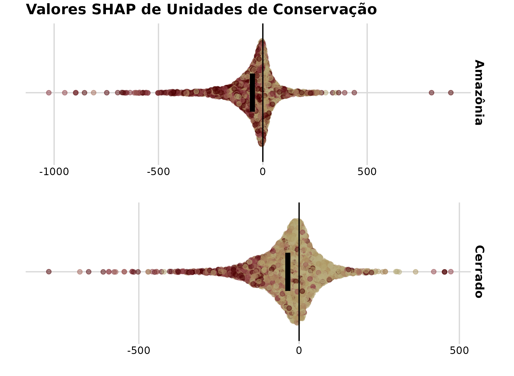
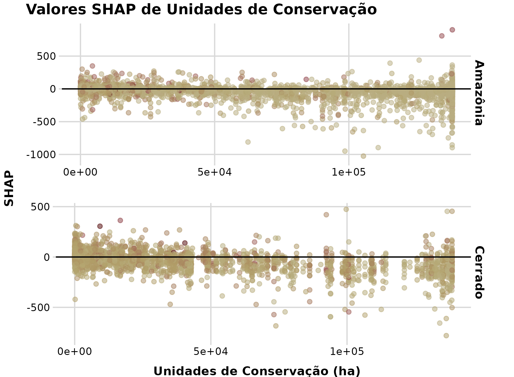

4 Resultados Preliminares
4.1 Modelo Teórico
4.1.1 Desenvolvimento do Modelo Teórico
O desenvolvimento do modelo teórico é conduzido com base nos dados levantados pelas consultas à literatura e pelas entrevistas. Esses dados refletem minha interpretação do que foi escrito ou dito nos conteúdos disponíveis.
A (Tabela 4.1) mostra parte das informações encontradas na literatura. Nela, é possível encontrar os objetos relacionados à , e qual é a descrição da relação entre ambos.
A (Tabela 4.2) mostra as informações obtidas através das entrevistas. Nela, é possível encontrar os objetos relacionados à , e qual é a descrição da relação entre ambos.
A partir das informações disponíveis, o modelo teórico foi desenvolvido através da repetição de um exercício de retrodução, como explicado na Seção 3.2. Nos pŕoximos paragráfos farei uma descrição do processo de retrodução para alguns objetos identificados na literatura e nas entrevistas.
4.1.1.1 O caso das rodovias
Um dos objetos discutidos na literatura são as rodovias e estradas (aqui chamadas somente como rodovias), sendo consideradas como um dos fatores mais importantes para a ocorrência da . Já sendo um objeto de relevância conhecida, agora é necessário realizar a seguinte pergunta: se a presença de rodovias causa a supressão, quais são as condições necessárias para que essa relação seja real? A partir dessa pergunta refletimos se a simples presença de uma rodovia em proximidade à um remanecente de vegetação nativa irá necessariamente causar sua supressão. Em seguida, realizamos outra pergunta: Embora a relação entre a presença de rodovias e a ocorrência da supressão seja real, em quais condições essa relação não irá se manifestar?
As rodovias servem como um meio de transporte de pessoas, maquinários e bens de consumo, portanto elas podem oferecer uma facilidade tanto para o acesso à um remanecente de vegetação natural e a execução de sua supressão, quanto para o transporte dos recursos extraídos da área aonde a supressão ocorreu (Laurance et al. 2002; Rosa et al. 2013; Miyamoto 2020). Somente a facilidade de acesso e transporte de bens não seriam as únicas vantagens oferecidas pela presença de rodovias, a apropriação e venda das áreas suprimidas também é um possível ganho financeiro proporcionado pela (Fearnside 1983). Porém, mesmo com vantagens financeiras aparentes, nem todos os remanecentes de vegetação nativa nas proximidades de rodovias sofrem supressão, portanto imaginamos que existem contrapontos que podem ser mais fortes do que os ganhos proporcionados pela supressão. No Brasil, a presença de áreas protegidas por lei são um exemplo visto como bem sucedido para evitar supressões (Barber et al. 2014; R. F. B. da Silva et al. 2023), e que tem esse efeito mesmo quando localizados próximos a rodovias (Rosa et al. 2013; Milien et al. 2021; C. F. A. da Silva et al. 2023).
O efeito da presença de rodovias no aumento da nem sempre é observado através de estudos empíricos, Deng et al. (2011) chegaram à conclusão de que a presença de rodovias não causaram diminuição da área de florestas na província de Jiangxi, na China, entre 1995 e 2000. Nesse estudo, Deng et al. (2011) discutem a possibilidade de que a presença de estradas, em regiões pouco ocupadas e de baixa densidade populacional, podem servir como via de escoamento para produtos, reduzindo os custos de produção agrícola dessa região, e consequentemente aliviando a pressão para expansão de produções para novas áreas.
Em resumo, especulo que a presença de rodovias pode causar a ocorrência de das seguintes maneiras:
Aumentando a ocorrência de :
A presença de rodovias, oficiais ou não, facilita o acesso de pessoas à áreas de vegetação natural, e portanto facilita a ocorrência de com o objetivo de extração de recursos naturais ou então para a conversão da área para outro uso e ocupação;
A presença de rodovias, oficiais ou não, facilitam o transporte de materiais e equipamentos, que incentivam a extração de recursos naturais de áreas de vegetação natural, sendo que essa extração pode ser feita através da ;
Diminuindo a ocorrência de :
- Em contextos específicos, a presença de estradas pode diminuir custos de produção agrícola, aumentando a rentabilidade econômica de atividades locais e desincentivando a expansão das atividades sobre áreas de vegetação natural;
4.1.1.2 O caso das Áreas Protegidas
As Áreas Protegidas são consideradas como uma importante ferramenta para evitar a . Uma grande quantidade de evidências foram levantadas a favor do efeito das Áreas Protegidas em evitar a (Pfaff et al. 2015, 2014; Andam et al. 2008; Nolte et al. 2013; Gaveau et al. 2009), sendo que esse efeito é variável de acordo com o contexto espacial e temporal (Bernard, Penna, e Araújo 2014; Pfaff et al. 2015).
Apesar da importância da implementação e gestão de Áreas Protegidas ser reconhecida na literatura científica, há uma escassez na caracterização na forma como essas áreas atuam na preservação da vegetação natural. Tal escassez pode ser justificada pela singularidade da implementação e administração de cada Área Protegida. O sucesso de uma Áreas Protegidas depende fortemente em sua legitimização pela comunidade local e da estratégia de gestão adotada (Gonçalves, Branquinho, e Felzenszwalb 2011).
No Brasil, as Áreas Protegidas formalmente reconhecidas são as Unidades de Conservação, os Territórios Indígenas e os Territórios Quilombolas. Outros tipos de Áreas Protegidas, como Áreas de Preservação Permanente e Reservas Legais são tratadas no âmbito local de um ecossistema, e cumprem a função de conectividade entre fragmentos naturais e entre Áreas Protegidas. As Unidades de Conservação são submetidas a administração e fiscalização pelo estado (Medeiros 2006), atualmente são divididas em duas classes, Unidades de Proteção Integral, em que é permitido apenas o uso indireto de seus recursos naturais, e Unidades de Uso Sustentável, que permitem o uso sustentável de parte de seus recursos naturais (Medeiros 2006; Drummond, Andrade Franco, e Ninis 2009).
Existem casos em que apesar do estabelecimento e reconhecimento de uma Área Protegida, ainda ocorrem atividades ilegais relacionadas a . No Brasil, o Território Indígena Apyterewa apresentou uma grande área de ilegal entre 2019 e 2022, conduzida por populações não indígenas (Imazon 2022; Fundação Nacional dos Povos Indígenas 2024). O processo de ocorrência de atividades ilegais dentro desse território é fruto de uma história complexa do processo de homologação do Território Indígena Apyterewa, marcada por pressões políticas e judiciais contra os interesses da população indígenas, assim como a atuação de empresas madereiras e mineradoras e de populações não indígenas na região (Torres, Cunha, e Guerrero 2022, 212–21). Pressões externas e falta de apoio institucional são fatores que contribuíram para os altos números de ilegal no Território Indígena Apyterewa, porém, através de operações de retirada de invasores, o território apresentou uma redução expressiva na taxa de em 2024 (Governo Brasileiro 2024).
Em Benin, dados coletados em um Parque Nacional demonstram padrões espaciais e temporais de atividades ilegais dentro da Área Protegida, como pastoreio, agricultura, caça e extração de madeira (Tchetan, Azihou, e Gouwakinnou 2018). Foi observado que em contextos que dificultavam a atividade de patrulhamento, devido a estação chuvosa, a ocorrência de atividades ilegais era maior, assim como ocorreu em anos em que houveram dificuldades dificuldades financeiras e técnicas para a gestão de funcionários do Parque Nacional (Tchetan, Azihou, e Gouwakinnou 2018). O patrulhamento do Parque Nacional é um desencentivo para práticas ilegais pela possibilidade de punições como prisões e apreensões.
Ao redor do mundo, áreas de proteção também se relacionam com questões religiosas e locais sagrados (Dudley, Higgins‐Zogib, e Mansourian 2009), sendo que o mutualismo entre conservação institucional e a perspectiva de natureza através de religiões, pode ter um efeito positivo no desincentivo da (Dudley, Higgins‐Zogib, e Mansourian 2009; Maru, Gebrekirstos, e Haile 2022; Mcleod e Palmer 2015). As religiões podem cumprir um papel de definição da relação do homem com a natureza, influenciando em suas atitudes em relação ao ambiente em que habita (Mcleod e Palmer 2015). Consequentemente, valores religiosos associados a formações de vegetação natural podem ter influência em sua conservação.
Em resumo, especulo que Áreas Protegidas podem causar a ocorrência de das seguintes maneiras:
Aumentando a ocorrência de :
A implementação e formalização de uma Área Protegida pode levar à uma corrida pela extração de seus recursos antes do establecimento adequado da gestão dessa Área Protegida;
Populações que habitam legalmente as Áreas Protegidas podem se aliar e incentivar práticas de extração que levam à ocorrência de .
Diminuindo a ocorrência de :
Ocorrência de campanhas de fiscalização com o intuito de flagrar e punir infratores, na forma de despejo, remoção, multas, embargos, prisões e apreensões;
Mesmo em ocasiões de falta de fiscalização e monitoramento, o receio de populações locais em relação a punições do estado pode desintentiva-las a praticar a ;
Populações que habitam legalmente as Áreas Protegidas podem coibir e repelir atividades que levam à ocorrência de . Isso pode ocorrer através de intimidação indireta, embates diretos e denuncias realizadas pela população da Área Protegida;
A vegetação natural dentro de uma Área Protegida pode ter sua percepção de valor aumentada em relação a vegetação natural fora de àreas Protegidas. A consequência disso é que a vegetação natural dentro de Áreas Protegidas podem ser poupadas em detrimento da vegetação natural fora desse espaço;
4.1.1.3 Desenvolvimento Final do Modelo Teórico
Para o desenvolvimento final do modelo teórico da , fazemos a pergunta sobre quais são as condições necessárias para que a SVN seja manifestada, e quais as condições para que ela são seja manifestada?
Pela análise dos documentos na literatura ciêntifica e outras fontes de informação, é possível identificar alguns fatores que se relacionam com um embate entre o desenvolvimento humano e a conservação da natureza. O crescimento populacional, tanto rural quanto urbano, é frequentemente associado como uma possível causa da (Allen e Barnes 1985; Armenteras et al. 2006; Reydon, Fernandes, e Telles 2020). A população total também é associado como causa da SVN, em que áreas de vegetação natural, próximas de centros altamente populosos, são mais propensas à sofrerem supressões (Nelson e Hellerstein 1997; Laurance et al. 2002; Mas 2004; Armenteras et al. 2006; Santos et al. 2021). A proximidade com centros urbanos e estruturas como rodovias, ferrovias e hidrovias, e industrias (Ludeke, Maggio, e Reid 1990; Reydon, Fernandes, e Telles 2020; West e Fearnside 2021; Pfaff et al. 2015) são considerados como facilitadores da ocorrência de SVN. A ampliação de centros urbanos, estruturas de transporte, e o aumento da demanda por produtos e recursos naturais (Richards, Walker, e Arima 2014; Wagner e Lima 2024), representam essa necessidade de desenvolvimento humano, que se choca com a presença de formações de vegetação natural que ocupam espaços úteis para o avanço de uma certa perspectiva de desenvolvimento.
O surgimento do embate de agentes sociais com formações de vegetação natural ocorre a partir de uma oportunidade de avanço de uma perspectiva de desenvolvimento que é beneficiada pela supressão de formações de vegetação natural. Com a realização da possibilidade da ocorrência da , é intuitivo o questionamento de como e porque, pois apenas a oportunidade não seria capaz de promover a ação de supressão.
Para que a seja materializada, é necessário que o agente social tenha acesso à essa formação de vegetação natural. O acesso pode ser providenciado por estruturas de transporte, como rodovias e estradas (Vayda 1998; Laurance et al. 2002; Rosa et al. 2013; Miyamoto 2020; West e Fearnside 2021; Wagner e Lima 2024) e rios navegáveis (Laurance et al. 2002; Barber et al. 2014). Além do acesso, a prática de supressão requer o emprego de técnologias, como motoserras (Soares 2004; Repórter Brasil 2022), tratores (Hofmeister 2022; Repórter Brasil 2022; Sudré 2021) e produtos como herbicidas (Sudré 2021). Além de estruturas de transporte e equipamentos, também são necessários recursos humanos, ou seja, pessoas dispostas a realizar o trabalho de supressão, que envolve uma diversidade de riscos (Soares 2004). Esses são alguns fatores que possibilitam a ocorrência da SVN quando há uma oportunidade para tal.
A atuação de agentes sociais no processo de deve ser motivada por interesses internos e externos relacionados à esses agentes. Em relação a fazendeiros, existe a motivação de expansão de suas áreas produtivas, devido a ganhos financeiros consequentes de aumento de produção e valorização de suas propriedades (Fearnside 1983; Richards, Walker, e Arima 2014). As madereiras exploram formações vegetais e promovem a SVN para obter ganhos financeiros através da extração de recursos naturais das formações de vegetação natural (Wagner e Lima 2024). Para trabalhadores que realizam a SVN diretamente, dentro das formações de vegetação natural, a motivação vem de ganhos financeiros ou por itens de subsistência, apesar dos riscos envolvidos e das condições de trabalho precárias (Soares 2004), além da possibilidade de sofrer ameaças e violência (Aranha e Tania 2017). Portanto, a realização da SVN envolvem motivações de benefícios e malefícios consequêntes da ação de supressão. A percepção desses bônus e ônus podem ser fortemente distorcidas por relações de exploração do trabalho, feitas de forma de violência física ou simbólica.
Existem situações em que, apesar dos benefícios práticos concebidos pela , outros tipos de motivações impedem a ocorrência da supressão. Essas motivações podem ser de natureza ética e moral, como valores culturais, visão de desenvolvimento e progresso relacionados com a , e valores de beleza atribuídos à formações de vegetação natural (Hoelle 2018). Existem também questões religiosas que envolvem a preservação de formações de vegetação natural, podendo inclusive ser considerados como espaços sagrados, desincentivando sua supressão (Dudley, Higgins‐Zogib, e Mansourian 2009; Maru, Gebrekirstos, e Haile 2022).
4.1.2 Formalização do Modelo Teórico
O mecanismo generativo proposto para a é composto por cinco objetos:
Oportunidade: A oportunidade se manifesta através da ocorrência de um embate entre Seres Sentientes e Sociais (SSS), contra uma Formação Não Sentiente (FNS) composta por seres vivos e/ou seres inanimados;
Possibilidade: É a possibilidade da manifestação física de uma ação de supressão que o SSS realiza contra contra a FNS;
Valor: São valores morais e éticos do SSS que podem ser atribuídos a uma determinada FNS;
Benefícios: Os benefícios que a supressão de uma determinada FNS pode proporcionar aos SSS envolvidos na ação de supressão;
Malefícios: Os malefícios que podem surgir contra o SSS, como consequência da sua ação de supressão de uma determinada FNS;
De acordo com o paradigma ontológico adotado, este mecanismo generativo situa-se no . Portanto eu assumo que ele é permanente, no sentido em que não se altera no tempo e no espaço, e que o fenômeno analisado, a só se manifesta quando este mecanismo generativo é acionado.
Nas seções seguintes, a manifestação do mecanismo generativo é descrita em relação aos três domínios ontológicos do Realismo Crítico.
4.1.2.1 Explicação do Modelo Teórico no Domínio Real
Esse mecanismo, chamado a partir de agora como Mecanismo de Supressão de Formações Não Sentientes (MSF), opera no e no nível social da realidade. Isso significa que a ativação do MSF, e seu resultado consequente em relação à , não são completamente determinados por percepções psicológicas de individuos isolados, apesar de não ser independente do nível psicológico da realidade.
O MSF pode ser acionado quando um SSS e uma FNS coexistem no espaço e tempo. A ativação do mecanismo ocorre através de tendências manifestadas pelos objetos que compõe o MSF (Oportunidade, Possibilidade, Valor, Benefícios e Malefícios), que podem ser positivas ou negativas em relação a ocorrência da supressão. A integralização das tendências dos objetos do MSF irá determinar o resultado final da ativação do mecanismo.
Um atributo importante do MSF é da ausência de uma sequência temporal de manifestação dos objetos que compõe a MSF, ou seja, seria incoerente (em relação à lógica do modelo proposto) afirmar que a manifestação de valor em relação a uma FNS ocorre apenas depois da manifestação da oportunidade. Portanto, todos os objetos se manifestam de maneira desordenada e fora de fase na manifestação do MSF.
Outro atributo fundamental do MSF é de sua natureza retroativa. Esse atributo faz com que, mesmo quando a ativação do mecanismo cria uma tendência geral positiva para a manifestação da supressão, essa supressão pode ser interrompida pela configuração negativa de um objeto específico, porém, deixando uma tendência positiva latente em favor da supressão. Como exemplo, em um cenário hipotético, a Oportunidade, o Valor, os Benefícios e os Malefícios manifestam tendências favoráveis à ocorrência da supressão, porém, uma manifestação negativa de Possibilidade pode interromper a ocorrência da supressão. Mesmo que o resultado final do MSF, nesse exemplo, não tenha sido na manifestação da , uma força latente e residual permaneceu devido à tendência positiva (de Oportunidade, Valor, Benfícios e Malefícios) para a ocorrência da supressão, que leva a uma reorganização por parte do SSS para alterar as condições necessárias para a manifestação da supressão. Um esclarecimento dessa propriedade será feita com maiores detalhes na Seção 4.1.2.2 e Seção 4.1.2.3.
4.1.2.2 Explicação do Modelo Teórico no Domínio Atual
A realização do MSF no pode ser caracterizada pelo contexto de sua manifestação. O contexto da situação em que o mecanismo generativo é acionado, definirá as tendências da Oportunidade, da Possibilidade, do Valor, dos Benefícios, e dos Malefícios. Isto significa que, embora o mecanismo generativo não se altere ao longo do tempo e do espaço, ele se manifesta de formas diferentes, de acordo com o contexto em que ele é acionado.
No caso desse estudo, o SSS é a humanidade moderna e a FNS é a idéia de uma formação vegetal natural concebida pela pŕopria humanidade. A Oportunidade se manifesta pelo embate entre homem e natureza causado pela necessidade de desenvolvimento econômico, técnológico e social, e não é limitado por distâncias, já que no mundo globalizado, humanos fora de contato direto com formações de vegetação natural são também criadores desse embate. A Possibilidade se manifesta por capacidades técnológicas para a realização de supressão de grandes áreas, e condições de acesso à formações vegetais naturais. O Valor é manifestado através da atribuição de grandezas financeiras, serviços ecossistêmicos, beleza estética, sentimentos de afeto ou desafeto, práticas culturais, e de visões religiosas sobre formações de vegetação natural. Os Benefícios se manifestam através de ganhos financeiros, obtenção de posse de terras, extração de recursos naturais e de dominação ideológica, obtidos pela ocorrência da . Os Malefícios se manifestam por através de perdas financeiras causadas por multas, embargos e apreensões, assim como na deterioração de reputação pública, riscos de morte ou acidentes, sofrimento emocional, e pela degradação ambiental.
A natureza retroativa do MSF pode ser elaborada em maior detalhe quando analisanmos sua manifestação no . Em um cenário hipotético, em que um agente social está em embate com uma formação vegetal natural, os objetos que compõe o MSF se manifestam da seguinte maneira:
A Oportunidade se manifestou devido à necessidade da expansão da produção de alimentos de uma comunidade que habita na proximidade de uma formação de vegetação natural;
O Valor se manifestou com uma tendência favorável à supressão da formação de vegetação natural, que era vista como um lugar inóspito e perigoso, na percepção da comunidade;
O Benefício também se manifestou com uma forte tendência favorável à supressão, a comunidade iria obter terras para expandir sua produção de alimentos e garantir sua prosperidade. Além disso, iria extrair recursos naturais valiosos através da supressão da formação de vegetação natural;
O Malefício se manifestou de forma negativa à ocorrência da supressão, que envolvia riscos de morte e acidentes durante sua execução;
A Possibilidade se manifestou como uma força contrária à ocorrência da supressão, pois a comunidade não dominava técnologias necessárias para a realização do trabalho de supressão. A formação de vegetação natural era majoritariamente formada por grandes árvores de difícil supressão;
Apesar da grande tendência favorável pela supressão da formação de vegetação natural hipotética, a supressão foi impossibilitada pela tendência negativa da Possibilidade. Nesse contexto, a natureza retroativa do MSF faz com que a comunidade se reorganize a fim de mudar esse contexto para um estado que a Possibilidade de execução da supressão seja positiva. É importante notar que esse processo ocorre em conjunto com inúmeros outros fenômenos sociais, sendo que o MSF não será o único mecanismo influênciando transformações sociais, pois ele não se manifesta em um sistema fechado e não pode ser isolado de outros mecanismos.
4.1.2.3 Explicação do Modelo Teórico no Domínio Empírico
A realização do MSF no se manifesta através da percepção de agentes sociais sobre os objetos que compõe o MSF. A forma como esses objetos do MSF são percebidos e interpretados pelos agentes sociais é sempre parcial. O agente social não percebe, ou é insensível, a certos Valores sobre uma formação de vegetação natural. O agente social também tem uma perceção parcial dos Benefícios e Malefícios, portanto desconhece ou é insensível à certas consequências da condução da .
Por exemplo, o agravamento do aquecimento global pela , devido à emissão de gases do efeito estufa, já foi informada em algum instante a grande parte da população humana global. Porém, agentes sociais fortemente envolvidos na condução da podem ser insensíveis à esse Malefício, ou até mesmo desacreditar completamente de sua existência. Portanto, a importância do aquecimento global como Malefício, é percebido por um agente social de maneira completamente diferente de outros agentes sociais.
É importante destacar que o resultado da manifestação do MSF também é afetado pela interação entre percepções diversas, de diferentes agentes sociais, sobre os objetos que compõe o MSF. A partir disso, há o surgimento de conflitos entre agentes sociais relacionados com a , que ṕr sua vez também são afetados pela natureza retroativa do MSF.
Pŕoximos Passos
Realização das entrevistas;
Expansão da literatura analisada;
Aprofundamento e expansão da descrição dos objetos analisados;
Revisão do desenvolvimento do modelo teórico;
4.2 Análise Sociológica
4.2.1 Descrição do Campo do Uso e Ocupação da Terra
O campo social proposto para análise é formado pela disputa da ocupação e uso da terra, chamado de agora em diante como Campo da Ocupação e Uso da Terra (COUT). Dentro do COUT, os agentes sociais envolvidos disputam por recursos providos diretamente ou indiretamente por processos de uso e ocupação da terra. Ou seja, um agente social pode obter algum capital através de sua ocupação duradoura em uma área, como a possibilidade de estabelecer agricultura, ou então a possibilidade de extrair recursos de maneira temporária, como a extração de madeira.
Nesse projeto, a análise sobre o COUT é realizada especificamente sobre o processo de nos biomas Amazônia e Cerrado. A pode atuar tanto como meio quanto como fim dentro desse campo. Ela atua como meio quando é empregada para remover a vegetação natural de uma área e substitui-la por outra cobertura, como a agropecuária. Já sua atuação como fim se dá quando ocorre com o objetivo de utilização da vegetação natural como recurso, que pode ser para construções, combustível, ou como bem comercial.
A disputa que ocorre no COUT é fortemente determinada pela legislação, políticas públicas e processos judiciários. Porém, a forma de disputa na COUT vai além dos limites institucionais do estado, elas se dão por relações não formalizadas, porém reconhecidas entre agentes sociais. Por exemplo, a questão de propriedade de uma área para a ocorrência de atividade de garimpo ilegal, existe um agente social considerado como o proprietário dessa área, mesmo que isso não seja reconhecido pelo estado, mas que é legitimizado por outros agentes sociais envolvidos nessa atividade. Essas relações podem ser estabelecidas através de poder econômico, que dá acesso à compra de maquinário para a ocorrência do garimpo, mas também através de emprego da violência, tanto física quanto simbólica.
4.2.2 Posição do Campo do Uso e Ocupação da Terra em Relação ao Campo do Poder
A questão de posse, uso e ocupação da terra está envolvida com o acúmulo de capital em suas diversas formas.
Podemos considerar que o direito de posse de um espaço confere capital econômico pelo valor de venda da terra. Essa afirmação pode ser esclarecida pela análise do processo de grilagem de terras na Amazônia e no Cerrado, em que a apropriação ilegal de terras é utilizada como meio de valorização dessas áreas, e consequentemente o enriquecimento financeiro dos agentes sociais envolvidos nesse processo. A posse de terras nem sempre é diretamente relacionada com sua ocupação e uso, por exemplo, no processo de arrendamento de terras, o proprietário de uma área obtem ganhos financeiros exclusivamente pelo fato de possuir a terra como propriedade privada, cedendo o espaço para terceiros realizarem atividades comerciais nessa área.
Por outra perspectiva, a posse da terra não confere apenas vantagens econômicas, no caso de Territórios Indígenas, o capital conquistado pela posse dessas terras não está atrelado ao valor financeiro da terra em si, mas sim pelo direito de usofruto e legitimação de uma população e sua cultura. Essa questão, de legitimação de uma população especifica e da manutenção de sua cultura, também pode ser analisada sobre produtores agropecuários ligados ao agronegócio, em que o direito de posse, ocupação e uso de áreas extensas é uma condição para a reprodução e estabelecimento de suas formas de produção e suas manifestções culturais, garantindo à esse grupo social uma posição vantajosa no . Além disso, a questão de manutenção de uma população e sua cultura também está relacionada ao uso da terra, por exemplo, a importância de alguma espécie de cultivo e o seu manejo, como é o caso dos seringueiros e populações ribeirinhas.
O uso e ocupação da terra também fornece capital para algum agente social, mesmo quando esse não tem o direito de posse sobre essa terra, mas faz seu uso. Podemos citar como exemplo trabalhadores intermitentes, como os vaqueiros, que através do uso da terra adquirem seu sustento financeiro e reproduzem suas manifestações culturais e seu modo de vida, legitimando esse tipo de trabalhadores como um grupo reconhecido.
Portanto é possível afirmar que o capital concedido pela posse, uso e ocupação da terra, não se limita apenas ao valor monetário do hectare de terra. Esse fenômeno gera capital econômico na economia local, assim como participa do mercado financeiro global, ele também é o espaço de reprodução e estabelecimento de culturas, ou em outras palavras, de modos de vida.
Tendo em mente as diferentes formas de capital, com a posse, uso e ocupação da terra, é possível desenvolver a afirmação de que o COUT se posiciona em relação ao , na Amazônia e no Cerrado, das seguintes maneiras:
O COUT fornece capital econômico diretamente ou indiretamente para agentes sociais que conquistam direitos (de maneira instutucional ou não) de posse, uso e ocupação da terra;
O COUT fornece um capital simbólico pela posse da terra, que pode ser feito de maneira institucionalizada da propriedade privada, e da garantia de usofruto de terras da união;
O COUT fornece capital cultural através da possibilidade de desenvolvimento de práticas, conhecimento, habilidades e rituais por meio do uso e da ocupação da terra, ou por sua disputa;
O COUT fornece capital social através da construção de conexões socias, ou até mesmo alianças, que se estabelecem por objetivos em comum entre agentes sociais em relação à posse, uso e ocupação da terra.
4.2.3 Identificação dos Agentes Sociais e seu Capital
Os agentes sociais envolvidos no COUT possuem diferentes posições em relação a , em certos contextos, agentes sociais específicos podem ter posições favoráveis ou desfavoráveis à ocorrência da supressão, obtendo vantagens dentro da COUT dependendo do resultado das disputas envolvendo a SVN.
Dependendo do resultado final de uma disputa em relação à , os agentes sociais envolvidos se reorganizam para tentar mudar o contexto do COUT em que estão inseridos (seguindo a lógica da natureza retroativa do MSF explicado na Seção 4.1.2.1), como forma de alcançar seus objetivos em relação à SVN. O modo em que essa reorganização ocorre irá depender das formas de capital os agentes sociais possuem dentro da COUT.
Os principais agentes que participam do COUT são:
População Indígena:
A População Indígena é fortemente relacionada à questão da no Brasil, em que formações de vegetação natural fornecem recursos naturais para subsistência para grande parte dessa população, assim como espaço de reprodução cultural e religiosa. A População Indígena também está institucionalmente relacionada à por meio do reconhecimento legal dos Territórios Indígenas, que tem em sua concepção o objetivo de conservação de formações de vegetação natural. Em geral, esse agente social se posiciona de forma favorável à conservação de formações de vegetação natural, e de forma contrária à em larga escala.
Fazendeiros:
Fazendeiros são um agente social representado por produtores agropecuários, voltados para a obtenção de lucros financeiros e expansão de suas atividades, que não são obtidos exclusivamente pela produção agropecuária (Fearnside 2008). Em grande parte, esse grupo é formado por migrantes de diferentes períodos e lugares, sendo influenciados por diferentes motivações para a ocupação de áreas na Amazônia (Fearnside 2008) e no Cerrado (Jepson, Brannstrom, e Filippi 2010; Brannstrom et al. 2008), muito incentivados por programas de colonização de ambos biomas. Em geral, esse agente social se posiciona de forma favorável à em maiores escalas.
Trabalhadores do Desmatamento:
Os Trabalhadores do Desmatamento são as pessoas que realizam o ato de supressão diretamente. Na Amazônia e no Cerrado, existe uma predominância de emprego de mão de obra vulnerável em situações de trabalho precárias e frequentemente de caráter forçado (Fearnside 2008; Costa e Pereira 2022; Soares 2004). Em geral, esses trabalhadores operam tratores de construção civil para derrubar e remover vegetação natural, ou operam serras elétricas para a derrubada de árvores.
Também serão analisados outros agentes sociais, como colonos assentados, madereiras, População Quilombola, mineradoras, garimpeiros, Industria de maquinário agrícola e de construção civil, forças armadas, forças auxiliares, população ribeirinha, grileiros, ambientalistas, instituições ambientais e bancos.
4.2.4 Descrição do Habitus dos Agentes Sociais
O Habitus dos agentes sociais envolvidos na descreve a percepção desse agente sobre as formações de vegetação natural, e das consequências de sua supressão. Essa percepção é produto de uma construção histórica da identidade de um agente social, que afeta na sua percepção de Valores, Benefícios e Malefícios do MSF.
Trabalhadores do Desmatamento:
O Habitus dos Trabalhadores do Desmatamento deve ser descrito levando em consideração o histórico desses agentes sociais antes de seu engajamento com a . Os documentos analisados mostram um perfil comum desses trabalhadores, que em sua maioria são homens adultos que migraram de outros estados em busca de novas oportunidades de emprego e ascensão social. Muitos desses trabalhadores já estiveram envolvidos em outros tipos de trabalhos manuais, muitas vezes em condições precárias, como na construção civil, ou em carvoarias. Portanto, podemos especular uma parcela significativa dessas pessoas não possuí um vínculo forte com as formações de vegetação natural, como é o caso de Castanheiros, Seringueiros, Populações Quilombolas e Indígenas. Porém, depoímentos de alguns desses trabalhadores mostram que eles tem consciência dos impactos negativos da SVN, e da importância da conservação de formações de vegetação natural. Mesmo assim, são movidos pela necessidade de sustento financeiro através da atividade de supressão, necessidade que é reforçada por uma suposta falta de oportunidades.
A percepção de Benefícios da para Trabalhadores do Desmatamento pode ser formada pela expectativa de ganhos financeiros através dessa atividade, apesar de que os documentos mostram que essa expectativa não é realizada, já que boa parte desses trabalhadores são inseridos em situações de exploração do trabalho análogos à escravidão.
A percepção de Malefícios pode ser composta pelo alto riscos da atividade de supressão, que envolvem casos frequentes de acidentes que podem até causar mortes, e também pela consciência dos impactos ambientais negativos causados pela SVN.
A percepção de Valores pode se caracterizar por uma visão de ganhos financeiros e desenvolvimento atrelados à SVN, mas também de um reconhecimento da importância e beleza de formações de vegetação natural, especialmente de florestas tropicais. Porém, podemos especular que a origem desses trabalhadores afeta sua percepção de valores sobre a conservação de uma formação de vegetação natural, especialmente quando suas experiências de trabalho anteriores eram relacionadas a atividades como construção civil e carvoaria, que reforçam uma visão de desenvolvimento que pode ser contrária à conservação de paisagens naturais.
Apesar da consciência dos impactos negativos da , da importância da conservação de formações de vegetação natural, e de um retorno financeiro precário, ainda sim os Trabalhadores do Desmatamento continuam inseridos nessa atividade, e prosseguem com a SVN. Podemos especular que o balanço entre Malefícios, Benefícios e Valores são distorcidos por relações de trabalho abusivas, que envolvem coação, violência e ameaças. Essas condições de trabalhos podem ser facilitadas pela carência de capital econômico, cultural e social dos Trabalhadores do Desmatamento. Muitos desses trabalhadores são homens de baixa renda, que deixam suas famílias em busca de oportunidades, não possuem uma organização formal para defender seus direitos e não conhecem ou não tem acesso à dispositivos legais que podem retira-los de sua situação de trabalho precário. Portanto, os Trabalhadores do Desmatamento são agentes sociais extremamente vulneráveis no COUT.
Pŕoximos Passos
Expansão da identificação dos agentes sociais;
Revisão da descrição do Campo;
Expansão e revisão dos Agentes Sociais e suas posições no Campo;
Expansão e revisão da descrição do Habitus dos Agentes Sociais;
4.3 Análise Estatística
A análise estatística consiste na aplicação do modelo teórico com base em objetos estimados (variáveis) por números ou categorias, passivos de serem espacializados Tabela A.1. Especula-se que as variáveis escolhidas tenham efeito sobre a na forma de alterar a percepção de Valor, Benefícios e Malefícios dos agentes sociais envolvidos, assim como afetam a Possibilidade da ação de supressão.
4.3.1 Análise Exploratória
A cobertura temporal da análise estatística é limitada pela disponibilidade de dados sobre as variáveis escolhidas Figura 4.1.
É possível observar que o período de tempo em que existem observações para todas as váriáveis vai de 1995 até 2021, um período de 27 anos. Esse período cobre acontecimentos relevantes em relação à ocorrência da , como a criação do PPCDAm (2004) e a aprovação do Novo Código Florestal (2012).
As variáveis utilizadas são representadas em termos de área ou de comprimento que elas ocupam dentro de cada célula na grade regular Tabela 4.3.
Mínimo |
Média |
Mediana |
Máximo |
Desvio Padrão |
|
|---|---|---|---|---|---|
| conservation_units | 0 | 65K | 55K | 139K | 52K |
| highways | 0 | 33 | 34 | 149 | 19 |
| indigenous_territory | 0 | 70K | 64K | 139K | 55K |
| pasture | 0 | 26K | 10K | 130K | 31K |
| grasslands | 0 | 5K | 418 | 138K | 14K |
| other_vegetation | 0 | 8K | 950 | 128K | 18K |
| forest_formation | 9 | 82K | 100K | 139K | 52K |
| urban_area | 0 | 569 | 157 | 36K | 2K |
| savanna_formation | 0 | 26K | 6K | 137K | 34K |
| mining | 0 | 499 | 135 | 22K | 1K |
| temporary_crop | 0 | 10K | 1K | 113K | 18K |
| forest_plantation | 0 | 2K | 178 | 52K | 5K |
| perennial_crop | 0 | 1K | 131 | 28K | 3K |
| agriculture_mosaic | 2 | 11K | 8K | 94K | 10K |
| priority | 0 | 96K | 127K | 277K | 52K |
| monitored | 3 | 71K | 67K | 139K | 52K |
| quilombola_territory | 3 | 7K | 2K | 47K | 10K |
| veg_suppression | 0 | 911 | 472 | 27K | 1K |
A análise exploratória das variáveis será feita com o objetivo de mostrar a distribuição das observações ao longo do tempo, do espaço e de seus valores, representadas por séries temporais, mapas e histogramas, respectivamente.
4.3.1.1 Supressão de Vegetação Natural
A apresenta uma distribuição espacial distinta entre os biomas Cerrado e Amazônia Figura 4.2. Na amazônia, a SVN está concentrada em regiões específicas, atingindo altos valores de áreas suprimidas acumuladas ao longo do tempo. No Cerrado, a supressão se apresenta de forma mais dispersa, cobrindo quase todo o bioma.
É possível observar células com valores de área suprimida maiores do que da área da própria célula, devido a recorrência de supressão em áreas em que houve regeneração da vegetação natural.
Entre os anos de 1995 e 2021, a Amazônia apresentou o maior valor de anual em 2003 Figura 4.3, que foi seguido de uma queda consistente, atribuída em grande parte pela adoção de políticas públicas do PPCDAm. Em 2009, os valores de SVN apresentam uma estabilização, seguido por um retorno de seu aumento após 2012. No Carredo, o pico da SVN no período analisado foi em 1995 e 2004, seguido por uma queda e período de flutuações na supressão anual.

Apesar das séries temporais da na Amazônia e no Cerrado apresentarem tendências semelhantes, é possível observar variações diferentes em cada biomas. Após 2013, enquanto a supressão anual na Amazônia apresentava uma ascenção, no Cerrado foi possível observar uma queda até 2018.
As distribuições dos valores anuais da na Amazônia e no Cerrado Figura 4.4 demonstram características distintas. Na Amazônia, observamos uma maior frequência de valores baixos, indicando uma presença maior de células com pouca área suprimida, o que também pode ser observado na Figura 4.2. No Cerrado, os valores anuais da SVN são concentrados em um intervalo de valores mais estreito, o que indica que a maior parte das células da grade regular sofreram maiores supressões ao longo dos anos.
Comparando os dois biomas, observamos que a Amazônia apresenta valores mais extremos de , indicando que houveram anos em que grandes áreas de vegetação natural foram suprimidas de maneira concentrada em alguns locais, enquanto a SVN no Cerrado ocorreu de forma ampla em seu território.
4.3.1.2 Delimitação de Territórios Indígenas
Os Territórios Indígenas estão majoritáriamente localizados na Amazônia Figura 4.5, estando distribuídos por todo o bioma, porém de maneira concentrada em grandes extensões de área. No Cerrado, a área ocupada por Territórios Indígenas é menor, e concentrados em regiões próximas entre o limite entre os dois biomas.
Entre 1995 e 2021, a área total de Territórios Indígenas apresentou um aumento progressivo ao longo dos anos, especialmente na Amazônia Figura 4.6. Apesar do aumento, a área de Territórios Indígenas sofreu uma estagnação na última década.
A distribuição dos valores de área demarcadas como Territórios Indígenas mostra umaiores frequência de valores altos nas células da grade regular, devido à grandes concentrações desses territórios em algumas partes da Amazônia e Cerrado Figura 4.7.
4.3.1.3 Delimitação de Unidades de Conservação
A distribuição espacial de Unidades de Conservação na Amazônia e no Cerrado é dispersa em todo o território dos biomas Figura 4.8. Na Amazônia, é possível observar áreas de grandes extensões em que Unidades de Conservação foram implementadas. No Cerrado, observamos que as áreas de Unidades de Conservação são relativamente menores.
A área ocupada por Unidades de Conservação apresentou um rápido crescimento entre 1995 e 2006, após esse período, foi observado uma estagnação dessa área Figura 4.9. Ao longo de toda a série histórica analisada, a Amazônia apresentou uma extensão territórial ocupada por Unidades de Conservação maior que no Cerrado.

A distribuição dos valores de área ocupada por Unidades de Conservação mostra uma maior frequência de altos valores de área ocupada por essas unidades em cada célula da grade regular Figura 4.10. No Cerrado, essa característica não é tão forte quanto na Amazônia, já que existe uma maior frequência de valores mais baixos de área, o que indica uma maior frequência de células que não são totalmente ocupadas por Unidades de Conservação.
4.3.1.4 Delimitação de Territórios Quilombolas
Os Territórios Quilombolas apresentam uma distribuição limitada em ambos biomas Figura 4.11. Alguns territórios não foram contemplados nessa análise devido à falta de informações sobre a data de rechonhecimento destes Seção A.7.

As áreas de Territórios Quilombolas apresentou um aumento significativo após 1999 na Amazônia, e após 2009 no Cerrado Figura 4.12. Na última década, observamos uma estagnação na área de Territórios Quilombolas.
A distribuição de valores de áreas de Territórios Quilombolas mostram uma maior frequência de valores mais altos na Amazônia, em relação ao Cerrado Figura 4.13. Porém, essa distribuição não reflete a realidade da ocupação e efeito de populações Quilombolas em ambos biomas, devido à dificuldades de titulação desses territórios e pela falta de informações nos dados do processo de reconhecimento e institucionalização dos Territórios Quilombolas.
4.3.1.5 Malha Rodoviária
A distribuição espacial da Malha Rodoviária nos biomas mostra uma maior quantidade de rodovias dispersas pelo Cerrado, em comparação com a Amazônia Figura 4.14. Porém, esses dados representam apenas rodovias oficiais do Departamento Nacional de Infraestrutura de Transportes, mas temos o conhecimento da presença e da importância da presença de estradas não oficiais, que não são incluídas nessa análise pela falta de informações sobre a data de construção dessas estradas.
A série temporal do comprimento total da Malha Rodoviária na Amazônia e no Cerrado mostra que ambos biomas apresentam um crescimento quase linear de rodovias ao longo do período analisado Figura 4.15.
A distribuição dos valores do comprimento total da Malha Rodoviária, por célula da grade regular, mostra uma maior frequência de valores mais altos de quantidade de rodovia Figura 4.16, o que está de acordo com a própria distribuição espacial dessa variável, que é concentrada em faixas de grandes rodovias.
4.3.2 Resultados do Modelo
A distribuição espacial das estimativas da mostra a somatória de supressão as longo da série histórica analisada Figura 4.17. Os resultados para a Amazônia mostram um padrão de supressão similar ao dos dados de referência Figura 4.2, em que células com a presença de rodovias apresentaram valores mais altos de supressão, e células com a maior presença de Áreas Protegidas apresentaram menores valores de supresssão total. Porém, as estimativas de SVN acumuladas entre 1995 e 2021 não chegaram a valores altos como nos dados de referência, indicando uma incapacidade do modelo de estimar valores extremos de SVN. No Cerrado, os valores estimados pelo modelo estatístico também apresentaram uma distribuição espacial similar aos dados de referência Figura 4.2.
O Erro Médio Acaumulado de cada célula da grade regular mostra pontos com maior erro dispersos pela Amazônia, especialmente nas áreas com maior ocorrência de supressão, em que valores extremos não foram corretamente estimados pelo modelo estatístico Figura 4.18. No Cerrado, maiores erros foram observados em regiões concentrados à Leste do Bioma.

A análise da sétie temporal dos valores estimados de mostra que modelo estatístico foi capaz de representar as tendências temporais de supressão anual, porém, flutuações intra-anuais não foram corretamente representadas Figura 4.19. A falta de mais variáveis para caracterizar elementos temporais da SVN, como políticas públicas, pode ter contribuído para a incapacidade do modelo de representar a variação temporal da supressão corretamente.
A dispersão entre os valores estimados pelo modelo estatístico, e os valores de referência, mostra uma tendência de superestimativa de valores menores da , e uma subestimativa de valores maiores de supressão Figura 4.20.
4.3.3 Interpretação do Modelo


Pŕoximos Passos
Revisão das variáveis;
Adição de novas variáveis;
Revisão do método de amostragem;
Revisão do algorítmo utilizado;
Implementação de técnicas de interpretação de modelos de regressão;
Referências
Allen, Julia C., e Douglas F. Barnes. 1985. «The Causes of Deforestation in Developing Countries». Annals of the Association of American Geographers 75 (2): 163–84. https://doi.org/10.1111/j.1467-8306.1985.tb00079.x.
Andam, Kwaw S., Paul J. Ferraro, Alexander Pfaff, G. Arturo Sanchez-Azofeifa, e Juan A. Robalino. 2008. «Measuring the effectiveness of protected area networks in reducing deforestation». Proceedings of the National Academy of Sciences 105 (42): 16089–94. https://doi.org/10.1073/pnas.0800437105.
Aranha, Ana, e Caliari Tania. 2017. «Trabalho escravo na Amazônia: homens cortam árvores sob risco e ameaça». https://reporterbrasil.org.br/2017/03/trabalho-escravo-na-amazonia-homens-cortam-arvores-sob-risco-e-ameaca/; Repórter Brasil.
Armenteras, Dolors, Guillermo Rudas, Nelly Rodriguez, Sonia Sua, e Milton Romero. 2006. «Patterns and causes of deforestation in the Colombian Amazon». Ecological Indicators 6 (2): 353–68. https://doi.org/10.1016/j.ecolind.2005.03.014.
Barber, Christopher P., Mark A. Cochrane, Carlos M. Souza, e William F. Laurance. 2014. «Roads, deforestation, and the mitigating effect of protected areas in the Amazon». Biological Conservation 177: 203–9. https://doi.org/10.1016/j.biocon.2014.07.004.
Bernard, E., L. A. O. Penna, e E. Araújo. 2014. «Downgrading, Downsizing, Degazettement, and Reclassification of Protected Areas in Brazil». Conservation Biology 28 (4): 939–50. https://doi.org/10.1111/cobi.12298.
Brannstrom, Christian, Wendy Jepson, Anthony M. Filippi, Daniel Redo, Zengwang Xu, e Srinivasan Ganesh. 2008. «Land change in the Brazilian Savanna (Cerrado), 1986–2002: Comparative analysis and implications for land-use policy». Land Use Policy 25 (4): 579–95. https://doi.org/10.1016/j.landusepol.2007.11.008.
Costa, Beatriz Souza, e Camilla De Freitas Pereira. 2022. «O trabalho escravo contemporâneo na região amazônica brasileira». Revista Brasileira de Políticas Públicas 12 (2). https://doi.org/10.5102/rbpp.v12i2.7731.
Deng, Xiangzheng, Jikun Huang, Emi Uchida, Scott Rozelle, e John Gibson. 2011. «Pressure cookers or pressure valves: Do roads lead to deforestation in China?» Journal of Environmental Economics and Management 61 (1): 79–94. https://doi.org/10.1016/j.jeem.2010.04.005.
Drummond, Jose Augusto, Jose Luiz de Andrade Franco, e Alessandro Bortoni Ninis. 2009. «Brazilian Federal Conservation Units: A Historical Overview of their Creation and of their Current Status». Environment and History 15 (4): 463–91. https://doi.org/10.3197/096734009x12532652872036.
Dudley, Nigel, Liza Higgins‐Zogib, e Stephanie Mansourian. 2009. «The Links between Protected Areas, Faiths, and Sacred Natural Sites». Conservation Biology 23 (3): 568–77. https://doi.org/10.1111/j.1523-1739.2009.01201.x.
Fearnside, Philip M. 1983. «Land-use Trends in the Brazilian Amazon Region as Factors in Accelerating Deforestation». Environmental Conservation 10 (2): 141–48. https://doi.org/10.1017/s0376892900012236.
———. 2008. «The Roles and Movements of Actors in the Deforestation of Brazilian Amazonia». Ecology and Society 13 (1). https://doi.org/10.5751/es-02451-130123.
Fundação Nacional dos Povos Indígenas. 2024. «Assinatura de ato ministerial marca avanço considerável na desintrusão da Terra Indígena Apyterewa». https://www.gov.br/funai/pt-br/assuntos/noticias/2024/assinatura-de-ato-ministerial-marca-avanco-consideravel-na-desintrusao-da-terra-indigena-apyterewa; Governo Federal do Brasil.
Gaveau, David L. A., Justin Epting, Owen Lyne, Matthew Linkie, Indra Kumara, Markku Kanninen, e Nigel Leader‐Williams. 2009. «Evaluating whether protected areas reduce tropical deforestation in Sumatra». Journal of Biogeography 36 (11): 2165–75. https://doi.org/10.1111/j.1365-2699.2009.02147.x.
Gonçalves, Marco Pinheiro, Fátima Teresa Braga Branquinho, e Israel Felzenszwalb. 2011. «Uma análise contextual do funcionamento efetivo e participação popular em uma unidade de conservação: o caso da área de proteção ambiental de Petrópolis (Rio de Janeiro: Brasil)». Sociedade & Natureza 23 (2): 323–34. https://doi.org/10.1590/s1982-45132011000200014.
Governo Brasileiro. 2024. «Após retirada de invasores, Terra Indígena Apyterewa registra desmatamento zero». https://www.gov.br/funai/pt-br/assuntos/noticias/2024/apos-retirada-de-invasores-terra-indigena-apyterewa-registra-desmatamento-zero.
Hoelle, Jeffrey. 2018. «Quantifying cultural values associated with deforestation in the Brazilian Amazon». Journal of Land Use Science 13 (1–2): 166–81. https://doi.org/10.1080/1747423x.2018.1475516.
Hofmeister, Naira. 2022. «Máquinas pesadas aceleram desmatamento ilegal em lavouras e garimpos na Amazônia». https://reporterbrasil.org.br/2022/08/maquinas-pesadas-aceleram-desmatamento-ilegal-em-lavouras-e-garimpos-na-amazonia/; Repórter Brasil.
Imazon. 2022. «Alvo de grileiros, Terra Indígena Apyterewa é a mais pressionada pelo desmatamento na Amazônia». https://imazon.org.br/imprensa/terra-indigena-ahttps://imazon.org.br/imprensa/alvo-de-grileiros-terra-indigena-apyterewa-e-a-mais-pressionada-pelo-desmatamento-na-amazonia/.
Jepson, Wendy, Christian Brannstrom, e Anthony Filippi. 2010. «Access Regimes and Regional Land Change in the Brazilian Cerrado, 1972–2002». Annals of the Association of American Geographers 100 (1): 87–111. https://doi.org/10.1080/00045600903378960.
Laurance, William F., Ana K. M. Albernaz, Götz Schroth, Philip M. Fearnside, Scott Bergen, Eduardo M. Venticinque, e Carlos Da Costa. 2002. «Predictors of deforestation in the Brazilian Amazon». Journal of Biogeography 29 (5–6): 737–48. https://doi.org/10.1046/j.1365-2699.2002.00721.x.
Ludeke, Aaron Kim, Robert C. Maggio, e Leslie M. Reid. 1990. «An analysis of anthropogenic deforestation using logistic regression and GIS». Journal of Environmental Management 31 (3): 247–59. https://doi.org/10.1016/s0301-4797(05)80038-6.
Maru, Yoseph, Aster Gebrekirstos, e Getahun Haile. 2022. «Indigenous Sacred Forests as a Tool for Climate Change Mitigation: Lessons from Gedeo Community, Southern Ethiopia». Journal of Sustainable Forestry 42 (3): 260–87. https://doi.org/10.1080/10549811.2021.2007490.
Mas, J. 2004. «Modelling deforestation using GIS and artificial neural networks». Environmental Modelling & Software 19 (5): 461–71. https://doi.org/10.1016/s1364-8152(03)00161-0.
Mcleod, Elizabeth, e Martin Palmer. 2015. «Why Conservation Needs Religion». Coastal Management 43 (3): 238–52. https://doi.org/10.1080/08920753.2015.1030297.
Medeiros, Rodrigo. 2006. «Evolução das tipologias e categorias de áreas protegidas no Brasil». Ambiente & Sociedade 9 (1): 41–64. https://doi.org/10.1590/s1414-753x2006000100003.
Milien, Edelin Jean, Karla da Silva Rocha, Irving Foster Brown, e Stephen G. Perz. 2021. «Roads, deforestation and the mitigating effect of the Chico Mendes extractive reserve in the southwestern Amazon». Trees, Forests and People 3: 100056. https://doi.org/10.1016/j.tfp.2020.100056.
Miyamoto, Motoe. 2020. «Poverty reduction saves forests sustainably: Lessons for deforestation policies». World Development 127: 104746. https://doi.org/10.1016/j.worlddev.2019.104746.
Nelson, Gerald C., e Daniel Hellerstein. 1997. «Do Roads Cause Deforestation? Using Satellite Images in Econometric Analysis of Land Use». American Journal of Agricultural Economics 79 (1): 80–88. https://doi.org/10.2307/1243944.
Nolte, Christoph, Arun Agrawal, Kirsten M. Silvius, e Britaldo S. Soares-Filho. 2013. «Governance regime and location influence avoided deforestation success of protected areas in the Brazilian Amazon». Proceedings of the National Academy of Sciences 110 (13): 4956–61. https://doi.org/10.1073/pnas.1214786110.
Pfaff, Alexander, Juan Robalino, Diego Herrera, e Catalina Sandoval. 2015. «Protected Areas’ Impacts on Brazilian Amazon Deforestation: Examining Conservation – Development Interactions to Inform Planning». Editado por Kamal Bawa. PLOS ONE 10 (7): e0129460. https://doi.org/10.1371/journal.pone.0129460.
Pfaff, Alexander, Juan Robalino, Eirivelthon Lima, Catalina Sandoval, e Luis Diego Herrera. 2014. «Governance, Location and Avoided Deforestation from Protected Areas: Greater Restrictions Can Have Lower Impact, Due to Differences in Location». World Development 55: 7–20. https://doi.org/10.1016/j.worlddev.2013.01.011.
Repórter Brasil. 2022. «A Arma do Crime: Como equipamentos agrícolas e de construção civil estão contribuindo para o desmatamento ilegal da Amazônia». Monitor. https://reporterbrasil.org.br/wp-content/uploads/2022/08/220801-Monitor-Maquinas-do-Desmatamento-PT.pdf.
Reydon, Bastiaan Philip, Vitor Bukvar Fernandes, e Tiago Santos Telles. 2020. «Land governance as a precondition for decreasing deforestation in the Brazilian Amazon». Land Use Policy 94: 104313. https://doi.org/10.1016/j.landusepol.2019.104313.
Richards, Peter D., Robert T. Walker, e Eugenio Y. Arima. 2014. «Spatially complex land change: The Indirect effect of Brazil’s agricultural sector on land use in Amazonia». Global Environmental Change 29: 1–9. https://doi.org/10.1016/j.gloenvcha.2014.06.011.
Rosa, Isabel M. D., Drew Purves, Carlos Souza, e Robert M. Ewers. 2013. «Predictive Modelling of Contagious Deforestation in the Brazilian Amazon». Editado por Bruno Hérault. PLoS ONE 8 (10): e77231. https://doi.org/10.1371/journal.pone.0077231.
Santos, Alex Mota dos, Carlos Fabricio Assunção da Silva, Pedro Monteiro de Almeida Junior, Anderson Paulo Rudke, e Silas Nogueira de Melo. 2021. «Deforestation drivers in the Brazilian Amazon: assessing new spatial predictors». Journal of Environmental Management 294: 113020. https://doi.org/10.1016/j.jenvman.2021.113020.
Silva, Carlos Fabricio Assunção da, Mauricio Oliveira de Andrade, Alex Mota dos Santos, e Silas Nogueira de Melo. 2023. «Road network and deforestation of indigenous lands in the Brazilian Amazon». Transportation Research Part D: Transport and Environment 119: 103735. https://doi.org/10.1016/j.trd.2023.103735.
Silva, Ramon Felipe Bicudo da, Daniel de Castro Victoria, Fábio Ávila Nossack, Andrés Viña, James D. A. Millington, Simone Aparecida Vieira, Mateus Batistella, Emilio Moran, e Jianguo Liu. 2023. «Slow-down of deforestation following a Brazilian forest policy was less effective on private lands than in all conservation areas». Communications Earth & Environment 4 (1). https://doi.org/10.1038/s43247-023-00783-9.
Soares, Ana Paulina Aguiar. 2004. «Madeira ilegal, trabalho ilegal: condições de trabalho na indústria madeireira no Estado do Amazonas». Revista de Geografia da Universidade do Amazonas, 97–125. http://www.observatoriogeograficoamericalatina.org.mx/egal9/Geografiasocioeconomica/Geografiapolitica/02.pdf.
Sudré, Lu. 2021. «Amazônia em destruição: entenda e veja como acontecem as fases do desmatamento». https://www.brasildefato.com.br/2021/01/17/amazonia-em-destruicao-entenda-e-veja-como-acontecem-as-fases-do-desmatamento; Brasil de Fato.
Tchetan, Tchègoun B., Akomian F. Azihou, e Gerard N. Gouwakinnou. 2018. «Spatio‐temporal analysis of illegal activities from ranger‐collected data in W National Park of Benin». PARKS, n.º 24.2: 35–44. https://doi.org/10.2305/iucn.ch.2018.parks-24-2tbt.en.
Torres, Mauricio, Cândido Neto da Cunha, e Natalia Ribas Guerrero. 2022. «Grilagem, desmatamento e o avanço sobre terras indígenas na Amazônia». Em Infraestrutura para produção de commodities e povos etnicamente diferenciados, 526. Mórula. https://morula.com.br/wp-content/uploads/2022/08/CDTI_01_Infraestrutura_WEB_29AGO.pdf.
Vayda, Andrew P. 1998. «Anthropological perspectives on tropical deforestation? A review article». Anthropos, 573–79. https://www.jstor.org/stable/40464854.
Wagner, Carolina, e Renato Abreu Lima. 2024. «Estratégias de conservação e uso sustentável de áreas protegidas na região Amazônica: uma revisão sistemática». Journal of Biotechnology and Biodiversity 12 (1): 015–23. https://doi.org/10.20873/jbb.uft.cemaf.v12n1.17587.
West, Thales A. P., e Philip M. Fearnside. 2021. «Brazil’s conservation reform and the reduction of deforestation in Amazonia». Land Use Policy 100: 105072. https://doi.org/10.1016/j.landusepol.2020.105072.